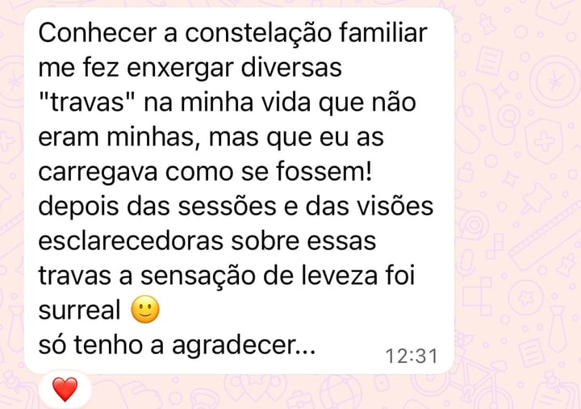
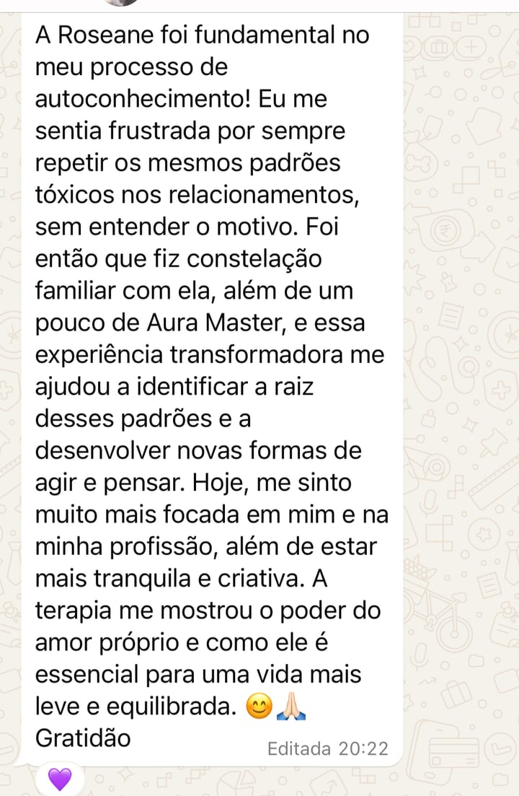
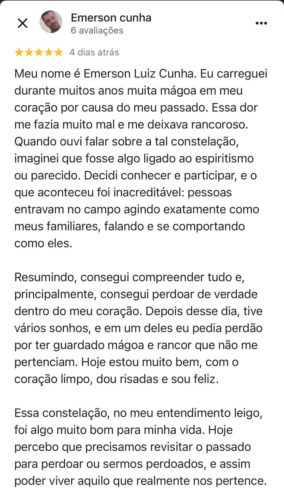
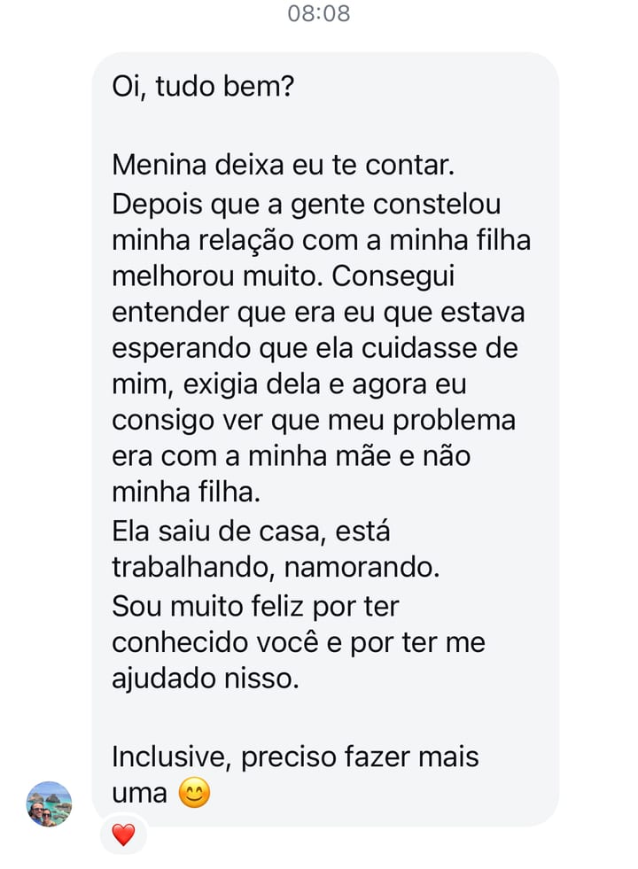
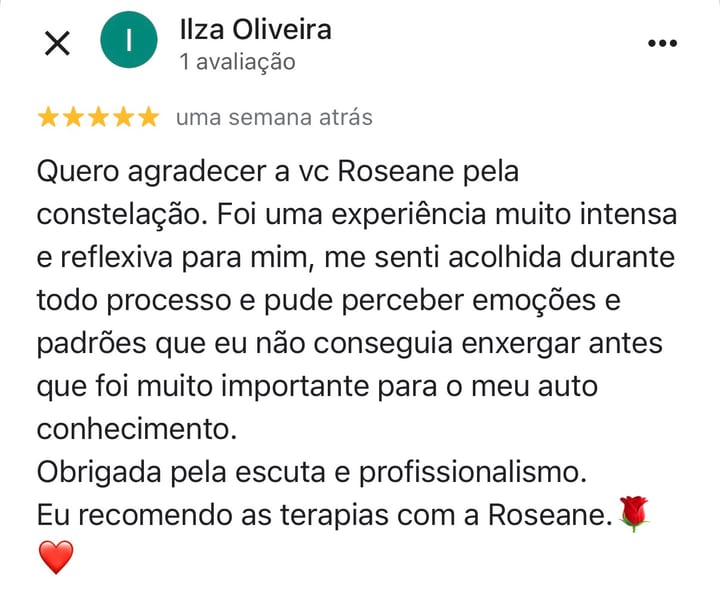
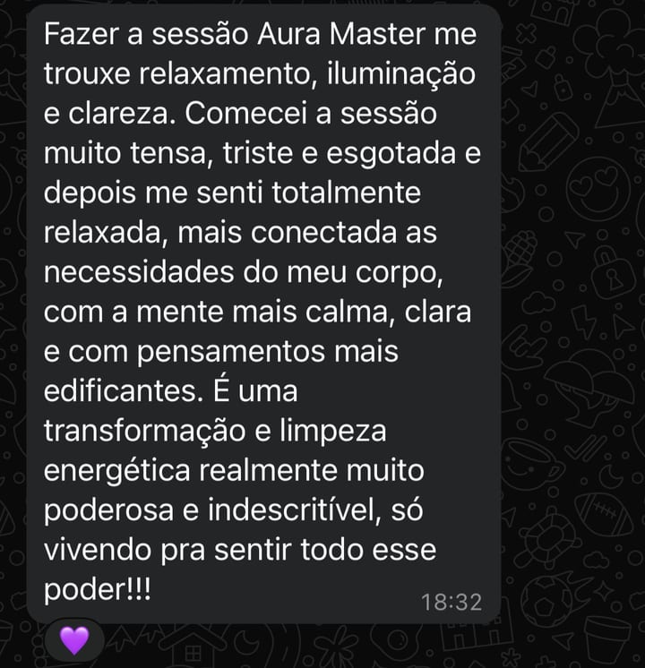
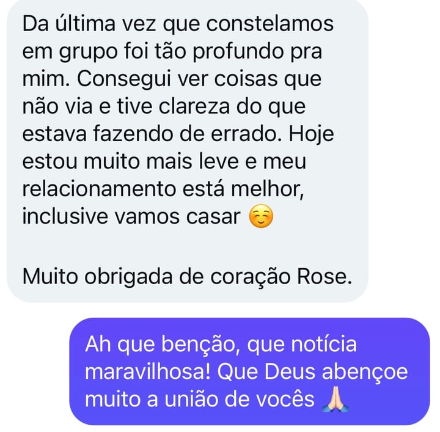

Método LAR · Uma travessia de volta para si
Talvez o problema não seja apenas a rotina. Depois de anos cuidando de todos, resolvendo tudo e se colocando por último, muitas mulheres começam a sentir um cansaço que descanso nenhum resolve.
Descubra o que está por trás do seu cansaço ↓
Talvez você se reconheça
O problema nem sempre é a quantidade de coisas que você faz. Muitas vezes é a distância entre quem você é e a vida que está vivendo.
“A história que te quebrou não começou em você.
O caminho de volta, sim — e ele começa no dia em que você para de olhar pra fora e olha, enfim, pra dentro.”
O caminho de volta
Liberação • Acolhimento • Restauração
O Método LAR foi criado para ajudar mulheres a compreender o que está por trás do seu cansaço e reconstruir uma relação mais leve consigo mesmas. Ele considera quatro pilares fundamentais da vida.
Os padrões, vínculos e histórias que influenciam suas escolhas.
As emoções, feridas e experiências que moldaram quem você é.
Sua conexão consigo mesma e com aquilo que dá sentido à sua vida.
O corpo como expressão daquilo que foi vivido e sentido.
“O que você não olha, se repete. O que você reconhece, se transforma.”
Uma travessia de volta para si
Imagine que sua vida é uma casa. Ao longo dos anos alguns cômodos foram sendo fechados. Alguns esquecidos. Outros evitados. A Casa Interior é uma jornada para revisitar esses espaços, compreender sua história e voltar a habitar a própria vida.
Eu escolho olhar para mim.
Acolhendo a criança que fui.
Ressignificando minha relação com meus pais e ancestrais.
Equilibrando minhas relações e ocupando o meu lugar.
Acolhendo quem eu sou.
Eu me permito.

Sobre mim
Durante muito tempo busquei fora respostas para questões que precisavam ser olhadas dentro de mim.
Foi ao compreender minha própria história que percebi algo importante: a verdadeira mudança não acontece quando nos tornamos outra pessoa.
Ela acontece quando voltamos para nós mesmas.
Hoje acompanho mulheres que estão cansadas de carregar tudo sozinhas e desejam viver com mais leveza, presença e paz — através do Método LAR e da Casa Interior.
Caminhos possíveis
Reflexão gratuita
Descubra o que pode estar por trás do seu cansaço.
Sessão LAR
Clareza para uma questão específica.
Ideal para quem deseja trabalhar uma situação pontual.
Saiba maisTríade LAR
Transformação de um padrão.
Ideal para quem deseja aprofundar uma questão recorrente.
Saiba maisTravessia Casa Interior
Uma jornada de volta para si.
Próximos encontros
Os encontros presenciais acontecem em São José dos Pinhais, sempre em grupo pequeno. Online, sob demanda — de onde você estiver.
Quinta-feira, 19h30 · Coworking VivaMente, São José dos Pinhais. Grupo pequeno de propósito: aqui ninguém é número. Você pode vir constelando ou como representante. Vagas limitadas — a reserva é feita pelo WhatsApp.
Elas contam
5,0 no Google · avaliações reais de quem fez a travessia
Antes, um “eu estava…”. Depois, um “hoje eu me sinto…”. Leveza, paz, clareza, autoestima, relações mais inteiras. Cada uma dessas mulheres um dia esteve mais ou menos onde você está agora.







← deslize · toque para ampliar →
Todas elas começaram com um primeiro passo. Se você quer que essa também vire a sua história, vamos conversar.
Ver as avaliações no GoogleConforme cada momento
Cada mulher possui uma história única. Por isso diferentes recursos podem ser utilizados ao longo do processo, conforme a necessidade de cada momento.
Não precisa entender cada nome agora. Na nossa conversa eu te mostro o que faz sentido para onde você está.
Dúvidas comuns
Sim. É um momento gratuito e rápido, que você faz online, para começar a enxergar o que pode estar por trás do seu cansaço e identificar o seu perfil predominante. Sem compromisso.
É o caminho que eu criei para ajudar mulheres a compreender o que está por trás do seu cansaço e reconstruir uma relação mais leve consigo mesmas. LAR são três movimentos — Liberação, Acolhimento e Restauração — que olham para quatro pilares da vida: o sistêmico, o emocional, o espiritual e o físico.
É uma travessia de volta para si. A gente usa a imagem de uma casa: ao longo da vida, alguns cômodos foram sendo fechados, esquecidos ou evitados. A Casa Interior é a jornada para revisitar esses espaços, compreender sua história e voltar a habitar a própria vida.
Você não precisa decidir tudo agora. Pode começar pela reflexão gratuita, ou me chamar no WhatsApp e me contar onde você está. A partir daí, juntas, a gente vê o que faz mais sentido para o seu momento — uma Sessão LAR, a Tríade ou a Travessia.
Sim. A Travessia Casa Interior é um acompanhamento individual, com seis encontros, materiais exclusivos, meditações e terapias gravadas, o Mapa da Casa Interior e WhatsApp próximo durante todo o caminho.
Você não caminha sozinha. Ao longo do processo, eu te acompanho de perto pelo WhatsApp, com presença e direcionamento conforme cada etapa pede.
Não. Você não precisa chegar com nada pronto nem com tudo claro. Basta vir com disposição de olhar para dentro, mesmo que dê um friozinho na barriga.
O primeiro passo
Descubra o que pode estar por trás do seu cansaço e dê o primeiro passo de volta para si.